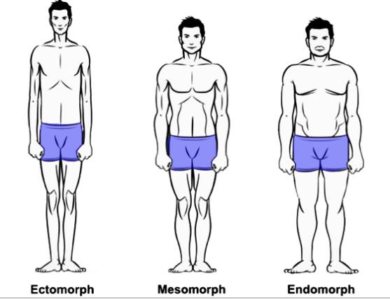

ClerFit
Health & Fitness Calculators
Body Type / Somatotype Calculator (Heath–Carter Method)

Somatotype Meaning & Applications
The Heath–Carter somatotype classifies body composition into three components:
| Component | Meaning | Applications |
|---|---|---|
| Endomorphy | Relative fatness; higher values indicate more body fat accumulation. |
|
| Mesomorphy | Musculoskeletal development; higher values indicate more muscle and stronger bones. |
|
| Ectomorphy | Linearity or slenderness; higher values indicate less fat and muscle mass. |
|
Overall Applications
- Tailor fitness programs based on body type.
- Guide nutrition strategies for weight, muscle, and fat management.
- Match body type with sport-specific demands.
- Monitor body composition changes over time.